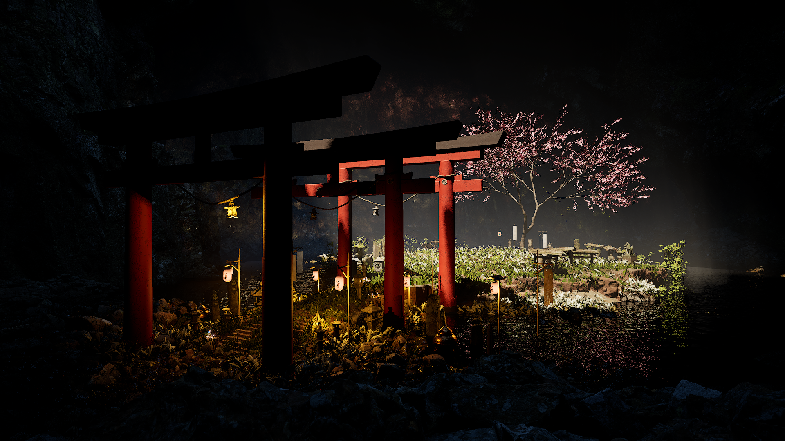
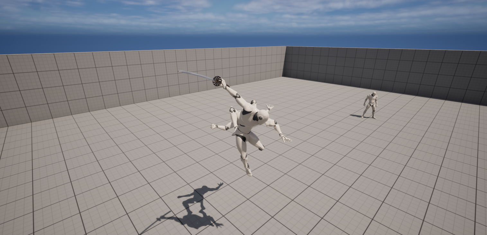
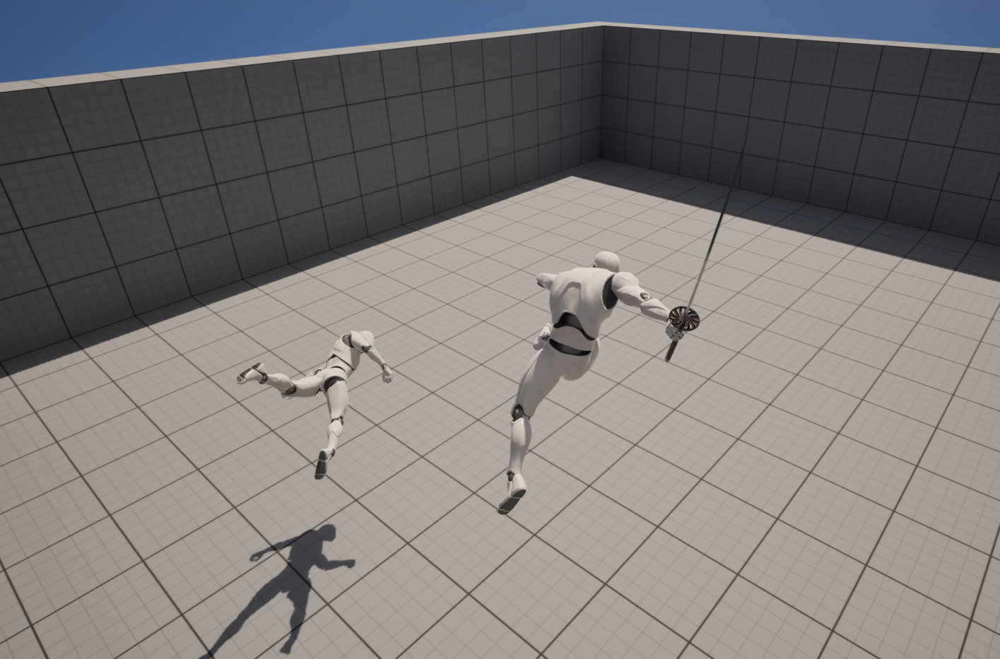

Журнал прогресса
Ключевые этапы
Игровые механики
- 1. Проработка механик: Разработка системы Чести, случайные встречи
- 2. 3D-моделирование: Создание оружия, боевой локации, концепт арты. 
- 3. Разработка: Разработка вражеского ИИ и механика борьбы и парирования.  
- 4. Тестирование: Проверка игрового билда, отчёт о багах.